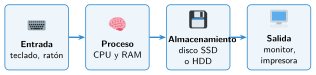
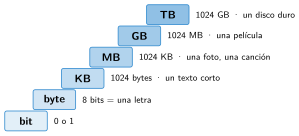

Hardware y software
Criterios: 2a
🤔 Pienso10 min
Qué hago aquí: Piensa un momento y contesta con lo que ya sabes. No pasa nada si no lo sabes: es para empezar.
Haz una lista de todo lo que ves en tu puesto de ordenador. Después, marca lo que podrías tocar con la mano.
📖 Leo y aprendo30 min
Qué hago aquí: Lee despacio, mira los dibujos y los ejemplos, y quédate con la idea clave del final.
Un sistema informático reúne tres cosas: las máquinas, los programas y las personas que los usan. Para entender el ordenador hay que distinguir sus dos partes, como el cuerpo y la mente de un ser vivo:

La información se mide en bits y bytes:

✏️ Hago150 min
Qué hago aquí: Haz las actividades en orden. Empieza siempre por las básicas.
Relaciona cada concepto con su definición.
- Hardware Memoria de trabajo; se borra al apagar el equipo.
- Software Parte física del ordenador.
- CPU Memoria para guardar archivos para siempre.
- RAM Parte lógica, intangible.
- Memoria secundaria El cerebro del ordenador.
Clasifica en hardware o software: Windows, teclado, Word, placa base, antivirus, disco SSD, Chrome, monitor, Excel, ratón.
Ordena de menor a mayor: 1 TB, 500 MB, 2 GB, 1 KB, 1 byte. ¿Cuántas fotos de 4 MB caben en un USB de 32 GB, más o menos?
Busca las características de un ordenador de oficina en una tienda en línea y clasifícalas en una tabla: procesador, RAM, almacenamiento, tarjeta gráfica, sistema operativo y precio.
Explica con tus palabras el ejemplo del coche aplicado a tu móvil: ¿qué es hardware y qué es software?
🚀 Amplío (si quieres saber más)
Qué hago aquí: ¿Has terminado? Lee la curiosidad o elige el reto. Es voluntario.
Investiga qué es el firmware. ¿Es hardware o software? Pon dos ejemplos de aparatos que lo tengan.
✅ Compruebo10 min
Qué hago aquí: Contesta sin mirar la ficha y marca cómo lo llevas.